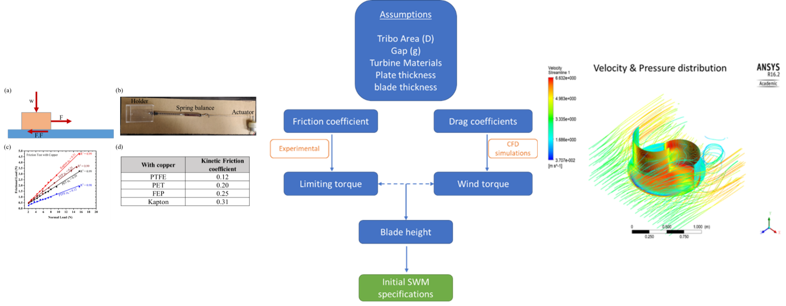
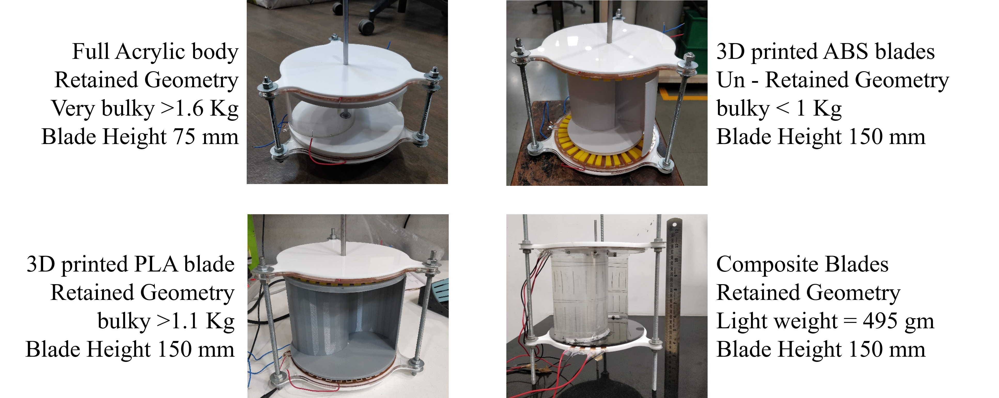
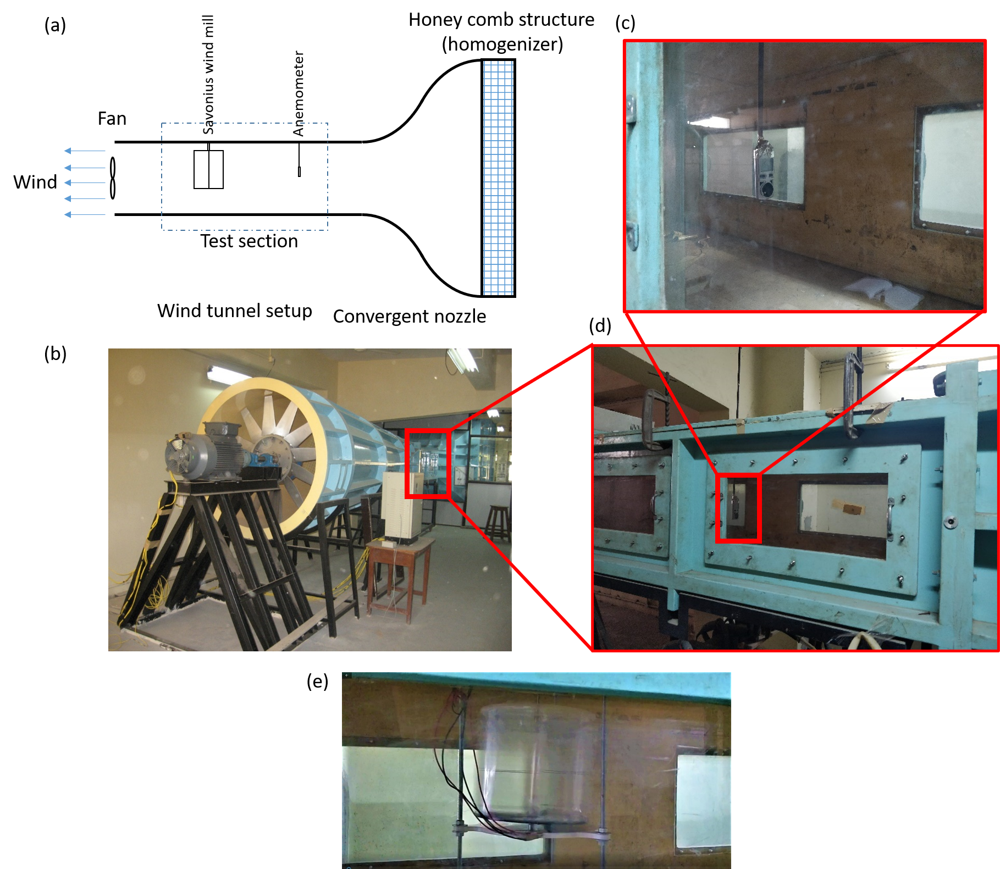
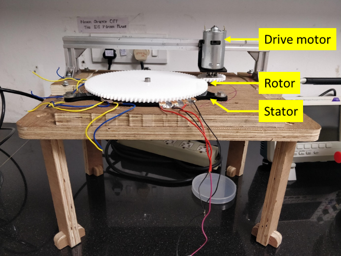

Tribo electric savonius windturbine
1. Introduction
With the rapid growth in portable, personal, and wearable electronic devices, relying on conventional energy sources like fossil fuels, windmills, hydroelectric stations, and so on is becoming impractical. They require large infrastructure, huge capital, and time-consuming government policies for establishments. Over the long run, these drawbacks create a lag in the supply of energy for the growing demands. Moreover, with the emergence of the internet of things (IoT) applications that encompass sectors such as sensors for disease diagnostics, health monitoring, security/surveillance, and infrastructure monitoring, sustainable and distributed power sources become essential that can be deployed even in isolated and inaccessible environments.
This project tries to address this energy crisis for the larger population by developing a budgetfriendly, sustainable, zero-emission, portable energy harvesting device which should be powerful enough to charge a small electronic gadget, like a mobile. Developing a portable harvester leads to a distributed energy source model. This decentralization energy harvesting not only helps in just ambient energy harvesting but has a major contribution to the reduction of ohmic losses incurred while transmitting the electric power over long cables. I have explored the possibilities of driving a rotary mode TENG using a savonius wind turbine. The developed wind turbine was able to power a few electronic sensors.
2. The concept

3. The design approach

4. Prototypes developed

5. Wind tunnel testings

6. r-TENG optimization on custom built fixture
